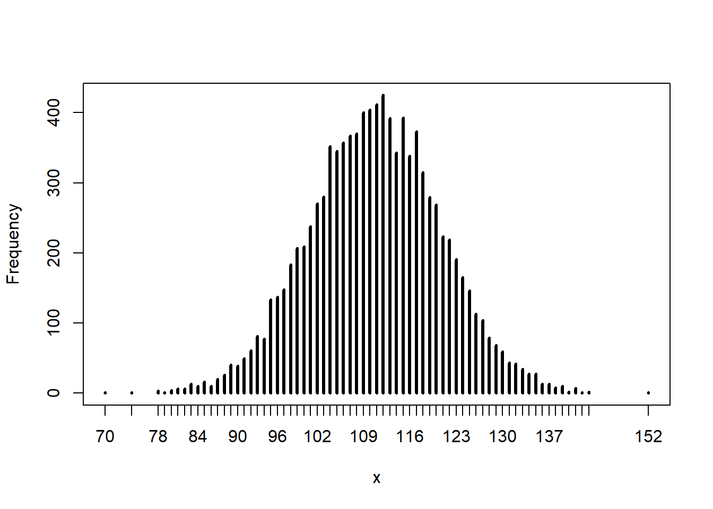
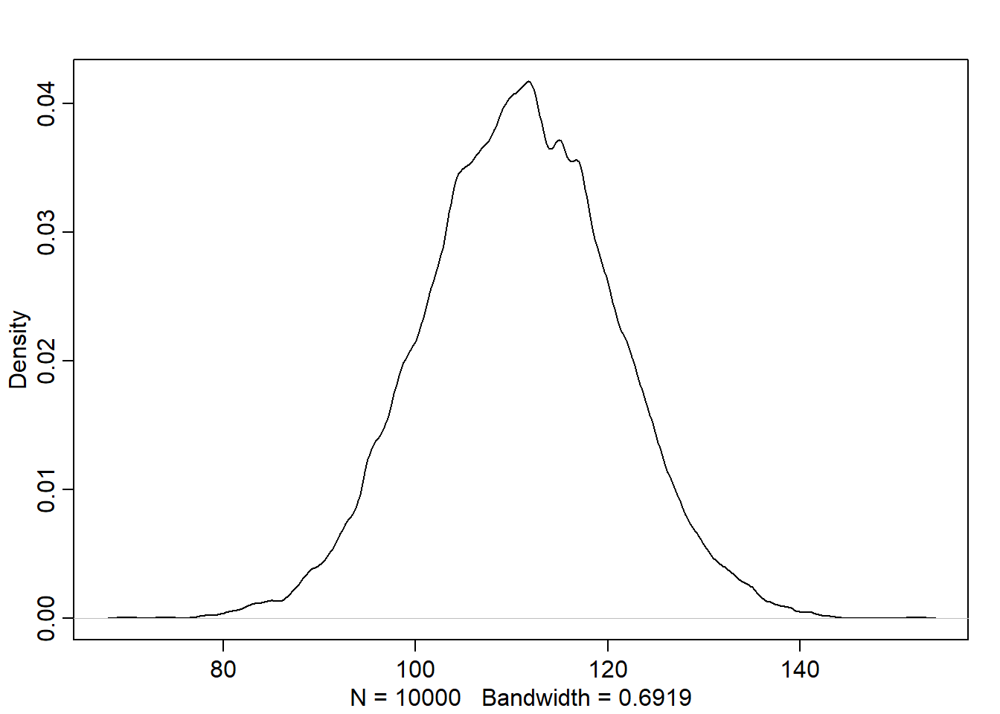
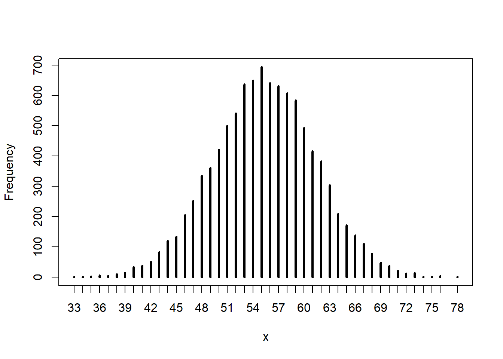
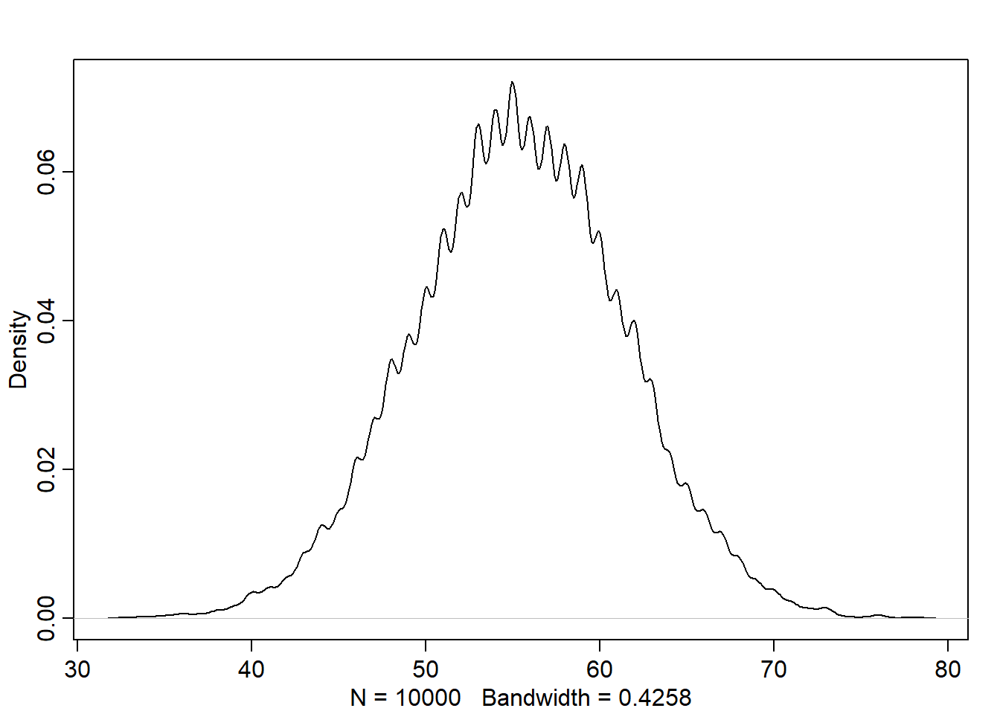

Chapter 3 Sampling the Imaginary
3.1 Chapter Notes
I haven’t written chapter notes for the first five chapters.
3.2 Questions
The Easy problems use the samples from the posterior distribution for the globe tossing example. This code will give you a specific set of samples, so that you can check your answers exactly.
p_grid <- seq( from=0 , to=1 , length.out=1000 )
prior <- rep( 1 , 1000 )
likelihood <- dbinom( 6 , size=9 , prob=p_grid )
posterior <- likelihood * prior
posterior <- posterior / sum(posterior)
set.seed(100)
samples <- sample( p_grid , prob=posterior , size=1e4 , replace=TRUE )3E1
Question
How much posterior probability lies below p = 0.2?
Answer
Here’s the code:
#Exact answer
sum(posterior[p_grid<0.2])*100
#Sample answer
sum(samples<0.2)/length(samples)*100The exact answer is 0.09% Sampling from the posterior suggests 0.04%.
3E2
Question
How much posterior probability lies above p = 0.8?
Answer
Similarly:
#Exact answer
sum(posterior[p_grid>0.8])*100
#Sample answer
sum(samples>0.8)/length(samples)*100The exact answer is 12.03%. Sampling from the posterior suggests 11.16%.
3E3
Question
How much posterior probability lies between p = 0.2 and p = 0.8?
Answer
Code:
#Exact answer
sum(posterior[p_grid > 0.2 & p_grid < 0.8])*100
#Sample answer
sum(samples > 0.2 & samples < 0.8)/length(samples)*100The exact answer is 87.88%. Sampling from the posterior suggests 88.8%.
3E4
Question
20% of the posterior probability lies below which value of p?
Answer
Code:
#Exact answer
p_grid[[
which(cumsum(posterior)>0.2)[[1]]
]]
#Sample answer
quantile(samples,0.2)The exact answer suggests that 20% of the posterior probability lies below p = 0.52. The sample answer suggests p = 0.52.
3E5
Question
20% of the posterior probability lies above which value of p?
Answer
Code:
#Exact answer
p_grid[[
which(cumsum(posterior)>0.8)[[1]]
]]
#Sample answer
quantile(samples,0.8)The code checks the value of p such that 80% of the posterior probability lies below p. This is equivalent to 20% lying above p.
The exact answer suggests p = 0.76. The sample answer suggests p = 0.76.
3E6
Question
Which values of p contain the narrowest interval equal to 66% of the posterior probability?
Answer
#Sample answer
rethinking::HPDI(samples,prob=0.66)The interval (0.51 , 0.77) for p is the narrowest interval that contains 66% of the posterior probability.
3E7
Question
Which values of p contain 66% of the posterior probability, assuming equal posterior probability both below and above the interval?
Answer
#Sample answer
quantile(samples,c(0.17,0.83))
#Figures calculated by splitting the remaining probability 0.34 in half above and below the desired interval.
#quantile(samples,c( (1-0.66) / 2 ,1 - (1-0.66) / 2))
#alternatively:
#rethinking::PI(samples,0.66)The interval (0.5 , 0.77) for p is the interval that contains 66% of the posterior probability, assuming equal posterior probability both below and above the interval.
3M1
Question
Suppose the globe tossing data had turned out to be 8 water in 15 tosses. Construct the posterior distribution, using grid approximation. Use the same flat prior as before.
Answer
p_grid <- seq(0,1,length.out = 1e4)
prior <- rep(1,1e4)
# This next line contains the only code change
likelihood <- dbinom(8,size=15,prob=p_grid)
posterior <- prior * likelihood
posterior <- posterior/sum(posterior)3M2
Question
Draw 10,000 samples from the grid approximation from above. Then use the samples to calculate the 90% HPDI for p.
Answer
set.seed(100)
samples <- sample(p_grid, size=1e4, prob= posterior, replace=TRUE)
rethinking::HPDI(samples,0.9)## |0.9 0.9|
## 0.3379338 0.7208721The interval (0.34 , 0.72) for p is the narrowest interval that contains 90% of the posterior probability.
3M3
Question
Construct a posterior predictive check for this model and data. This means simulate the distribution of samples, averaging over the posterior uncertainty in p. What is the probability of observing 8 water in 15 tosses?
Answer
set.seed(100)
post_pred <- rbinom(1e4, size=15, prob=samples)
sum(post_pred==8)/length(post_pred)## [1] 0.1473There is a 14.7% chance of observing 8 water in 15 tosses.
3M4
Question
Using the posterior distribution constructed from the new (8/15) data, now calculate the probability of observing 6 water in 9 tosses.
Answer
set.seed(100)
post_pred <- rbinom(1e4, size=9, prob=samples)
sum(post_pred==6)/length(post_pred)## [1] 0.1804There is a 18.0% chance of observing 6 water in 9 tosses.
3M5
Question
Start over at 3M1, but now use a prior that is zero below p = 0.5 and a constant above p = 0.5. This corresponds to prior information that a majority of the Earth’s surface is water. Repeat each problem above and compare the inferences. What difference does the better prior make? If it helps, compare inferences (using both priors) to the true value p = 0.7.
Answer
#Recalculate the posterior distribution using the new prior
p_grid <- seq(0,1,length.out = 1e4)
new_prior <- c(rep(0,sum(p_grid<0.5)) , rep(2,length(p_grid) - sum(p_grid<0.5)) )
likelihood <- dbinom(8,size=15,prob=p_grid)
new_posterior <- new_prior * likelihood
new_posterior <- new_posterior/sum(new_posterior)
#Draw 10,000 samples from the grid approximation. Then use the samples to calculate the 90% HPDI for p.
set.seed(100)
new_samples <- sample(p_grid, size=1e4, prob= new_posterior, replace=TRUE)
rethinking::HPDI(new_samples,0.9)## |0.9 0.9|
## 0.5000500 0.7152715The 90% highest probability density interval for p was previously (0.34 , 0.72), now it is (0.5 , 0.72). The HDPI is narrower directly as a consequence of the prior eliminating estimates of p below 0.5.
#Construct a posterior predictive check for this model and data. This means simulate the distribution of samples, averaging over the posterior uncertainty in p. What is the probability of observing 8 water in 15 tosses?
set.seed(100)
new_post_pred <- rbinom(1e4, size=15, prob=new_samples)
sum(new_post_pred==8)/length(new_post_pred)## [1] 0.1567#true probability of seeing water 8 times in 15 tosses
dbinom(8,15,prob=0.7)## [1] 0.08113003There was previously a 14.7% chance of observing 8 water in 15 tosses. Now that probability is 15.7%. The model is trained on data of 8 water observations in 15 tosses, and the probability of reproducing that data from the posterior doesn’t seem to change much with our new prior. The true probability is much lower, around 8% (setting p=70%).
#Using the posterior distribution constructed from the new (8/15) data, now calculate the probability of observing 6 water in 9 tosses.
set.seed(100)
new_post_pred <- rbinom(1e4, size=9, prob=new_samples)
sum(new_post_pred==6)/length(new_post_pred)## [1] 0.2292#true probability of seeing water 6 times in 9 tosses
dbinom(6,9,prob=0.7)## [1] 0.2668279There was previously a 18.0% chance of observing 6 water in 9 tosses. Now that probability is 22.9%. The model with the new prior does a slightly better job of approximating the true probability of 26.7%
3M6
Question
Suppose you want to estimate the Earth’s proportion of water very precisely. Specifically, you want the 99% percentile interval of the posterior distribution of p to be only 0.05 wide. This means the distance between the upper and lower bound of the interval should be 0.05. How many times will you have to toss the globe to do this?
Answer
I found this one to be quite tricky.
I ended up just looping through sample sizes from 1 to 10000 and measuring the width of the 99% confidence interval for each size.
One thing that’s unsatisfying about this approach is that I’ve had to assume a number of “successes” for each i number of trials. I’ve assumed that successes occur roughly in the 8 out of 15 proportion seen in the chapter example, but should it be the case that the number of trials required to get a percentile interval to a target width should be dependent on the proportion of successes?
Also, you’d think there might be an analytical approach since we know the distribution is binomial, but I’ve just brute forced an answer using a loop.
p_grid <- seq( from=0 , to=1 , length.out=1000 )
prior <- rep( 1 , 1000 )
width <- list()
for (i in seq(1,10000)){
likelihood <- dbinom( round(i*8/15,digits = 0) , size=i , prob=p_grid )
posterior <- likelihood * prior
posterior <- posterior / sum(posterior)
set.seed(100)
samples <- sample( p_grid , prob=posterior , size=1e4 , replace=TRUE )
interval <- rethinking::PI(samples,0.99)
width[i] <- interval[2]-interval[1]
}
which(width<0.05)[1]## [1] 2731This method suggests 2731 trials should be sufficient.
This is one to revisit in the future.
3H1
The Hard problems here all use the data below. These data indicate the gender (male=1, female=0) of officially reported first and second born children in 100 two-child families.
birth1 <- c(1,0,0,0,1,1,0,1,0,1,0,0,1,1,0,1,1,0,0,0,1,0,0,0,1,0, 0,0,0,1,1,1,0,1,0,1,1,1,0,1,0,1,1,0,1,0,0,1,1,0,1,0,0,0,0,0,0,0, 1,1,0,1,0,0,1,0,0,0,1,0,0,1,1,1,1,0,1,0,1,1,1,1,1,0,0,1,0,1,1,0, 1,0,1,1,1,0,1,1,1,1)
birth2 <- c(0,1,0,1,0,1,1,1,0,0,1,1,1,1,1,0,0,1,1,1,0,0,1,1,1,0, 1,1,1,0,1,1,1,0,1,0,0,1,1,1,1,0,0,1,0,1,1,1,1,1,1,1,1,1,1,1,1,1, 1,1,1,0,1,1,0,1,1,0,1,1,1,0,0,0,0,0,0,1,0,0,0,1,1,0,0,1,0,0,1,1,0,0,0,1,1,1,0,0,0,0)So for example, the first family in the data reported a boy (1) and then a girl (0). The second family reported a girl (0) and then a boy (1). The third family reported two girls.
Question
Using grid approximation, compute the posterior distribution for the probability of a birth being a boy. Assume a uniform prior probability. Which parameter value maximizes the posterior probability?
Answer
We assume for the moment that gender is independent of birth order. Then we have a binomial distribution with an unknown parameter p, which is the target of our inference.
#observations in our data - this will form our likelihood
births=length(birth1)+length(birth2)
boys=sum(birth1)+sum(birth2)
#standard grid approximation approach seen above
p_grid <- seq( from=0 , to=1 , length.out=1000 )
prior <- rep( 1 , 1000 )
likelihood <- dbinom(boys , size= births, prob=p_grid )
posterior <- likelihood * prior
posterior <- posterior / sum(posterior)
#Which parameter value maximizes the posterior probability?
#We sample from the posterior as before, and find the mode.
set.seed(100)
samples <- sample( p_grid , prob=posterior , size=1e4 , replace=TRUE )
rethinking::chainmode(samples)## [1] 0.5552446The parameter value that maximises the posterior probability is 55.5%.
3H2
Question
Using the sample function, draw 10,000 random parameter values from the posterior distribution you calculated above. Use these samples to estimate the 50%, 89%, and 97% highest posterior density intervals.
Answer
I could have answered the last question analytically by using which.max(posterior)/1000, but since I used samples we’re well set up for this question.
set.seed(100)
rethinking::HPDI(samples, 0.5)## |0.5 0.5|
## 0.5265265 0.5725726rethinking::HPDI(samples, 0.89)## |0.89 0.89|
## 0.4994995 0.6076076rethinking::HPDI(samples, 0.97)## |0.97 0.97|
## 0.4824825 0.6296296The narrowest interval for p that contains 50% of the posterior distribution is (0.527 , 0.573).
The narrowest interval for p that contains 89% of the posterior distribution is (0.499 , 0.608).
The narrowest interval for p that contains 97% of the posterior distribution is (0.482 , 0.630).
3H3
Question
Use rbinom to simulate 10,000 replicates of 200 births. You should end up with 10,000 numbers, each one a count of boys out of 200 births. Compare the distribution of predicted numbers of boys to the actual count in the data (111 boys out of 200 births). There are many good ways to visualize the simulations, but the dens command (part of the rethinking package) is probably the easiest way in this case.
Does it look like the model fits the data well? That is, does the distribution of predictions include the actual observation as a central, likely outcome?
Answer
set.seed(100)
post_pred <- rbinom(1e4,200, samples)
rethinking::simplehist(post_pred)
rethinking::dens(post_pred)
The model appears to fit the data well, at least in the sense described: that the distribution of predictions includes the actual observation as a central, likely outcome.
3H4
Question
Now compare 10,000 counts of boys from 100 simulated first borns only to the number of boys in the first births, birth1. How does the model look in this light?
Answer
sum(birth1)## [1] 51set.seed(100)
post_pred <- rbinom(1e4,100, samples)
rethinking::simplehist(post_pred)
rethinking::dens(post_pred)
The model does a much worse job here. The true number of boys in birth1 is 51 out of 100, while the most likely outcomes expected by the model are closer to 55, 56.
3H5
Question
The model assumes that sex of first and second births are independent. To check this assumption, focus now on second births that followed female first borns. Compare 10,000 simulated counts of boys to only those second births that followed girls. To do this correctly, you need to count the number of first borns who were girls and simulate that many births, 10,000 times.
Compare the counts of boys in your simulations to the actual observed count of boys following girls. How does the model look in this light? Any guesses what is going on in these data?
Answer
after_girl <- birth2[birth1==0]
sum(after_girl)## [1] 39set.seed(100)
post_pred <- rbinom(1e4,length(after_girl), samples)
rethinking::simplehist(post_pred)There were 49 girls born out of 100 births in the birth1 data. We know that these parents went on to have another child. Out of these 49 other children, our model expects the number of boys to be in the region of 27-28.
In reality there were 39 boys born after the birth of a girl, well outside the central expectations of the model.
No clue what’s happening in the data. There’s presumably some selection effect going on, but I can’t think of a plausible one.